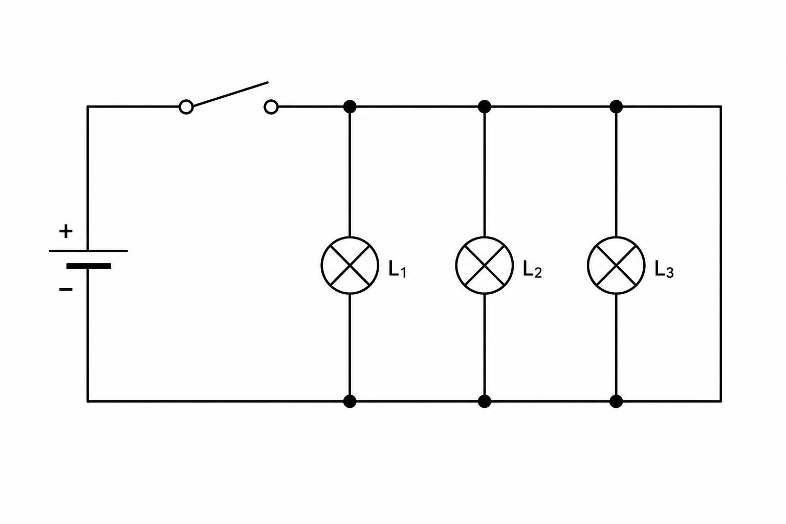
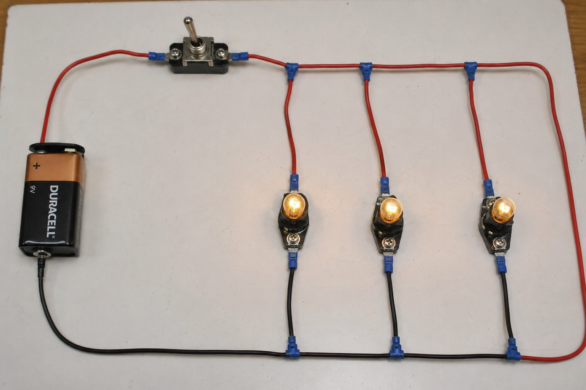

Sistemas Multi Física - Profesor Javier Pereyra
Circuitos eléctricos en paralelo
Apunte de estudio para comprender cómo se conectan ramas eléctricas, por qué la tensión es común, cómo se reparte la corriente y cómo se calcula la resistencia equivalente en paralelo.
1 Idea inicial
Un circuito en paralelo es como una avenida que se divide en varias calles y después vuelve a unirse. Las cargas tienen más de un camino posible para circular.
Si conectamos tres lamparitas en paralelo, cada una forma una rama propia. Para los cálculos, cada lamparita puede modelarse como una resistencia eléctrica.
2 Esquema del circuito
En el esquema se observa una pila, una llave cerrada y tres lamparitas conectadas en paralelo. Cada lamparita une los mismos dos conductores principales.

3 Imagen realista
En el montaje realista, las tres lamparitas están conectadas entre los mismos cables principales. Por eso, si una rama se interrumpe, las otras ramas pueden seguir funcionando.

4 Tensión en paralelo
En paralelo, todas las ramas están conectadas a los mismos dos puntos de la fuente. Por eso, la tensión en cada resistencia es la misma que la tensión total.
\(V_T\): tensión total entregada por la fuente.
\(V_1, V_2, V_3\): tensión en cada resistencia o rama.
Si la batería es de \(12\,V\), cada resistencia conectada en paralelo recibe \(12\,V\).
5 Corriente en paralelo
La corriente total no atraviesa completa a cada resistencia. Al llegar a una bifurcación, se divide entre las ramas disponibles.
\(I_T\): corriente total que entrega la fuente.
\(I_1, I_2, I_3\): corrientes parciales en cada rama.
La rama con menor resistencia deja pasar mayor corriente.
6 Resistencia equivalente
Agregar resistencias en paralelo agrega caminos alternativos para la corriente. Por eso, la resistencia equivalente disminuye.
\(R_{eq}\): resistencia equivalente del conjunto.
\(R_1, R_2, R_3\): resistencias de cada rama.
En paralelo, \(R_{eq}\) siempre resulta menor que la menor resistencia individual.
La corriente tiene caminos alternativos para volver a la fuente.
Cada rama está conectada a los mismos dos puntos del circuito.
Más ramas disponibles facilitan el paso de la corriente total.
7 Caso especial: resistencias iguales
Cuando varias resistencias iguales se conectan en paralelo, el cálculo se simplifica. Si hay \(n\) resistencias iguales de valor \(R\), la resistencia equivalente es:
\(R\): valor de cada resistencia igual.
\(n\): cantidad de ramas iguales conectadas en paralelo.
Por ejemplo, tres resistencias de \(12\,\Omega\) en paralelo equivalen a \(4\,\Omega\).
8 Sistema de unidades
| Magnitud | Símbolo | Unidad SI | En circuitos en paralelo |
|---|---|---|---|
| Corriente eléctrica | \(I\) | ampere \(A\) | La corriente total se reparte entre las ramas. |
| Tensión | \(V\) | volt \(V\) | Es la misma en cada rama. |
| Resistencia | \(R\) | ohmio \(\Omega\) | Cada rama puede tener una resistencia diferente. |
| Resistencia equivalente | \(R_{eq}\) | ohmio \(\Omega\) | Representa una sola resistencia que reemplaza a todas las ramas. |
9 Ejemplo resuelto 1
Problema: tres resistencias de \(6\,\Omega\), \(12\,\Omega\) y \(4\,\Omega\) se conectan en paralelo a una batería de \(12\,V\). Calcula la resistencia equivalente, la corriente en cada rama y la corriente total.
Datos: \(R_1=6\,\Omega\), \(R_2=12\,\Omega\), \(R_3=4\,\Omega\), \(V_T=12\,V\).
Tensión en cada rama: \(V_1=V_2=V_3=12\,V\).
Resistencia equivalente: \(\frac{1}{R_{eq}}=\frac{1}{6\,\Omega}+\frac{1}{12\,\Omega}+\frac{1}{4\,\Omega}=\frac{6}{12}\), entonces \(R_{eq}=2\,\Omega\).
Corrientes parciales: \(I_1=\frac{12\,V}{6\,\Omega}=2\,A\), \(I_2=\frac{12\,V}{12\,\Omega}=1\,A\), \(I_3=\frac{12\,V}{4\,\Omega}=3\,A\).
Corriente total: \(I_T=2\,A+1\,A+3\,A=6\,A\).
Interpretación: la rama de \(4\,\Omega\) conduce más corriente porque ofrece menor oposición. La resistencia equivalente queda por debajo de \(4\,\Omega\), la menor resistencia individual.
10 Ejemplo resuelto 2
Problema: dos lámparas iguales de \(24\,\Omega\) se conectan en paralelo a una fuente de \(12\,V\). Calcula \(R_{eq}\), la corriente por cada lámpara y la corriente total.
Datos: \(R_1=R_2=24\,\Omega\), \(V_T=12\,V\), \(n=2\).
Resistencia equivalente: \(R_{eq}=\frac{R}{n}=\frac{24\,\Omega}{2}=12\,\Omega\).
Corriente por rama: \(I_1=I_2=\frac{12\,V}{24\,\Omega}=0{,}50\,A\).
Corriente total: \(I_T=0{,}50\,A+0{,}50\,A=1{,}00\,A\).
Interpretación: las lámparas iguales reciben la misma tensión y conducen la misma corriente. Si una se desconecta, la otra conserva su conexión con la fuente.
11 ¿Qué pasa si se abre una rama?
Si una rama se abre, deja de circular corriente por esa rama, pero las demás pueden seguir funcionando porque todavía tienen un camino cerrado.
Esta es una diferencia importante con los circuitos en serie. En las instalaciones domiciliarias, los artefactos se conectan en paralelo para que cada uno reciba la misma tensión y pueda encenderse o apagarse de manera independiente.
12 Actividades
- Observa el esquema de la sección 2. Explica por qué las tres lamparitas están en paralelo y no en serie.
- Dos resistencias de \(10\,\Omega\) y \(20\,\Omega\) se conectan en paralelo a una fuente de \(10\,V\). Calcula la corriente en cada rama y la corriente total.
- Tres resistencias iguales de \(15\,\Omega\) se conectan en paralelo. Calcula la resistencia equivalente usando \(R_{eq}=\frac{R}{n}\).
- Un circuito en paralelo tiene \(R_1=6\,\Omega\), \(R_2=3\,\Omega\) y \(V_T=12\,V\). Calcula \(I_1\), \(I_2\) e \(I_T\).
- Completa la tabla para circuitos en paralelo:
\(R_1\) \(R_2\) \(R_3\) \(V_T\) \(I_1\) \(I_2\) \(I_3\) \(I_T\) \(4\,\Omega\) \(6\,\Omega\) \(12\,\Omega\) \(12\,V\) \(8\,\Omega\) \(8\,\Omega\) \(8\,\Omega\) \(24\,V\) - Calcula la resistencia equivalente de \(R_1=12\,\Omega\) y \(R_2=12\,\Omega\) conectadas en paralelo. Luego compara el resultado con una conexión en serie de esas mismas resistencias.
- Una fuente entrega \(9\,V\) a tres ramas en paralelo. ¿Qué tensión hay en cada rama? Justifica sin hacer cuentas largas.
- En una rama circulan \(0{,}25\,A\), en otra \(0{,}40\,A\) y en una tercera \(0{,}15\,A\). Calcula la corriente total que entrega la fuente.
- Si una resistencia de una rama se quema y queda como circuito abierto, ¿qué ocurre con las otras ramas? Compara con el caso de un circuito en serie.
- Diseña en tu carpeta un circuito en paralelo con pila, llave y tres lamparitas. Marca \(V_T\), \(I_T\), \(I_1\), \(I_2\) e \(I_3\).
13 Preguntas para pensar
- ¿Por qué la resistencia equivalente en paralelo puede ser menor que cada resistencia individual?
- ¿Qué significa decir que dos resistencias están conectadas entre los mismos dos puntos?
- ¿Por qué los artefactos de una casa no se conectan todos en serie?
- Si una rama tiene menor resistencia, ¿qué ocurre con la corriente de esa rama?
- ¿Qué mediciones harías con un multímetro para comprobar que dos lámparas están en paralelo?